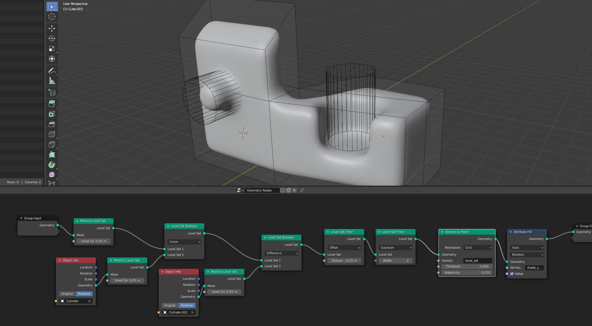
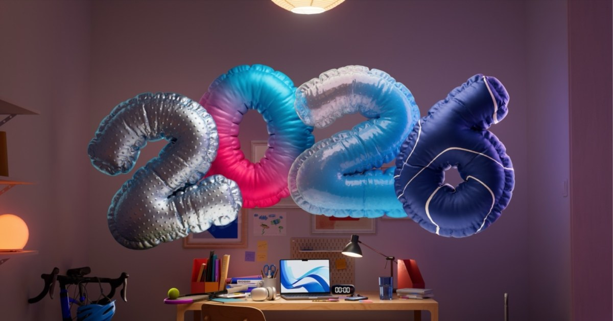
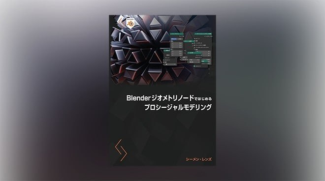
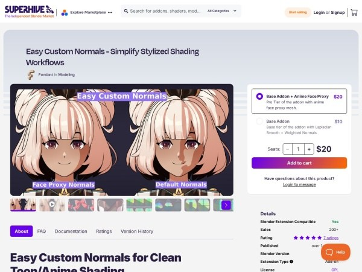
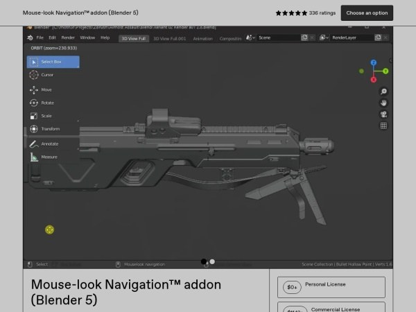
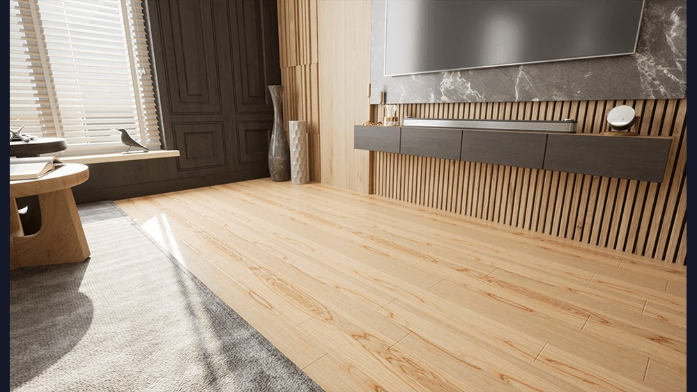

#02 · blender
Editable Motion Paths：在 Blender 視窗直接塑形動畫軌跡與節奏
Editable Motion Paths 將骨骼或物件動畫顯示為可編輯曲線，關鍵影格成為點、切線成為貝茲把手，修改後即時更新 F 曲線；工具支援 Blender 4.4 以上。
 SOURCE PREVIEW
· Local visual evidence · 點圖開啟原始來源
SOURCE PREVIEW
· Local visual evidence · 點圖開啟原始來源
Blender ★★★★☆
完整分析
動畫技術：沿可見路徑直接編輯
外掛把關鍵影格與貝茲把手放在動畫路徑上，可用吸附、擠出、切割及倒角等熟悉操作改變動作；底層 F 曲線會即時更新，也支援多骨骼與世界、局部或攝影機空間。
製作控制：形狀與時間分開調整
每幀圓點呈現間距，速度圖與時間圖可拖曳，雕刻筆刷則分別調整路徑形狀或快慢；角色洋蔥皮、速度色彩與重心顯示提供觀察動作的輔助資訊。
驗證限制：相容宣稱有範圍
報導說工具已在 Blender Studio 的 Rain 綁定測試，並轉述開發者的可投入製作與非破壞宣稱；這不等於所有自訂約束和驅動器都經過驗證。已列出的相容基線是 Blender 4.4 以上。
BRIEF｜來源已驗證；證據深度較有限，完整分析會明確區分已知資訊與待驗證事項。
來源 ↗
#03 · maya
歷史參考｜Maya Smart Layer 0.9：分層修正路徑、骨盆與四足動作
2024 年的 Smart Layer 0.9 更新介紹以動畫圖層比例套用修正，並支援四足角色、沿曲線行走與骨盆校正；此處回顧當時工具能力，不把作者的效率宣稱當成實測結果。
 SOURCE PREVIEW
· Local visual evidence · 點圖開啟原始來源
SOURCE PREVIEW
· Local visual evidence · 點圖開啟原始來源
Maya ★★★☆☆
完整分析
技術流程：修正轉成新圖層
先把動畫控制器加入圖層、為需要的修正設定關鍵影格，再執行腳本計算新動畫圖層並按比例套用；Flexible 模式支援四足角色沿圓形或曲線路徑行走。
製作影響：保留銜接姿勢
0.9 可保留起點和終點姿勢不被彎曲，原文將其連到遊戲動作混合品質；路徑距離改變時另有自動骨盆修正，處理腿部過度伸展，並可選擇是否沿曲線保留垂直旋轉。
判斷限制：效率數字出自作者
原文把覆蓋動畫師大部分需求的說法歸於作者，沒有提供跨綁定的對照測試；曲線行走、牆面行走及旋轉濾波應視為文中展示的功能，不能推定任意角色均能免除修整。
BRIEF｜來源已驗證；證據深度較有限，完整分析會明確區分已知資訊與待驗證事項。
來源 ↗
#05 · maya
歷史參考｜Maya RePather：協同調整角色路徑與鏈狀控制器
2025 年 RePather 展示四足模式與原地循環模式：前者可一起調整多個角色的行進路徑，後者把控制器鏈接到動畫圖層堆疊，面向蜿蜒物件的動作編輯。
 SOURCE PREVIEW
· Local visual evidence · 點圖開啟原始來源
SOURCE PREVIEW
· Local visual evidence · 點圖開啟原始來源
Maya ★★★☆☆
完整分析
動畫流程：多角色共同改路徑
報導的四足模式示範可同時處理多個角色，並以近身戰鬥說明保持空間關係的需求；這裡可確認的是協同路徑操作，並沒有證據顯示它會自行生成戰鬥表演。
製作控制：鏈狀物件沿路徑運動
原地循環模式可快速接上具有動畫圖層堆疊的控制器鏈，文中列舉龍、魚、蛇、車輛與火車等用途。推論：其參考價值在於把鏈狀控制和既有動畫一起調整。
驗證限制：介紹沒有完整測試條件
文章雖稱工具經製作測試，卻未列 Maya 相容版本、角色規模或路徑誤差量測；已公開的文字主要介紹兩個模式，因此不能把宣傳形容轉成可量化的效能保證。
BRIEF｜來源已驗證；證據深度較有限，完整分析會明確區分已知資訊與待驗證事項。
來源 ↗
#06 · blender
歷史參考｜Blender Storm 角色綁定：CloudRig 身體與多種臉部變形技術
2025 年 Blender Studio 的 Storm 角色介紹，說明身體採 CloudRig，臉部結合形狀鍵、帶狀引導與晶格變形；下載包另含臉部、手部與全身姿勢庫。
 SOURCE PREVIEW
· Local visual evidence · 點圖開啟原始來源
SOURCE PREVIEW
· Local visual evidence · 點圖開啟原始來源
Blender ★★★☆☆
完整分析
角色技術：身體與臉部分工
身體綁定使用 Blender Studio 的 CloudRig，臉部則由 Rik Schutte 結合形狀鍵、帶狀引導與晶格變形建構；這份介紹呈現不同變形方式在同一角色上的組合。
製作控制：從姿勢庫開始調整
資產包包含臉部、手部與全身姿勢，可從三維視窗的 Asset Shelf 存取。推論：動畫師能先套用可讀的姿態，再逐步修改表情與肢體，減少每次由中性姿勢重新設定的步驟。
取得限制：訂閱資產與版本範圍
原文說明下載對象為 Blender Studio 訂閱者，並非無條件公開免費資產；標題面向 Blender 5.0，而正文未提供跨版本或遊戲引擎輸出驗證，不能據此保證任意環境直接使用。
BRIEF｜來源已驗證；證據深度較有限，完整分析會明確區分已知資訊與待驗證事項。
來源 ↗
#07 · blender
歷史參考｜《Graduation》短片：混合兩種 Blender 渲染，再手繪整合背景
2025 年 Myxo Mycota 分享《Graduation》的製作：將 EEVEE 與 Cycles 通道合成，再以畫筆修邊、調色並逐鏡整合角色；作者表示整支短片約一週完成。
 SOURCE PREVIEW
· Local visual evidence · 點圖開啟原始來源
SOURCE PREVIEW
· Local visual evidence · 點圖開啟原始來源
Blender ★★★☆☆
完整分析
渲染流程：合成後重新作畫
作者混合較銳利的 EEVEE 輸出與較高品質的 Cycles 通道，再對最終畫面塗繪，模糊邊緣、加入筆觸與調色；角色材質本身也是手繪，以圖形塊面與繪畫筆觸建立風格。
製作取捨：依鏡頭整理拼裝場景
期限緊迫讓團隊無法完整搭建場景，改以拼裝道具配合逐張背景覆畫；動畫保持簡約，部分段落採用綁定 PNG 在三維空間輕晃，讓畫面朝插畫式構圖集中。
流程限制：背景覆畫會改變整合條件
背景重畫後色調變化很大，原始角色渲染看起來像貼紙，作者因此逐鏡手動調整；原先希望重畫每張角色影格的想法也因時間不足未完成，不能將其寫成實際採用的完整流程。
BRIEF｜來源已驗證；證據深度較有限，完整分析會明確區分已知資訊與待驗證事項。
來源 ↗
#08 · blender
Blender 幾何節點工作坊：模態工具、烘焙介面與模擬限制
2026 年幾何節點工作坊紀錄討論持續接收操作輸入的模態工具，以及把烘焙、匯出按鈕移到群組和修改器介面；官方也明確列出布料模擬仍缺自碰撞等限制。
 SOURCE PREVIEW
· Local visual evidence · 點圖開啟原始來源
SOURCE PREVIEW
· Local visual evidence · 點圖開啟原始來源
Blender ★★★☆☆
完整分析
工具設計：持續讀取操作狀態
模態節點工具仍有進行中的實作，工作坊提議除了按鍵事件，也直接提供按鈕目前狀態和筆壓；如此不必由每個節點工具自行追蹤所有輸入狀態，面向筆刷等互動工具。
製作控制：把烘焙放到資產介面
高階布料與毛髮資產的烘焙按鈕目前藏在深層節點；提案允許群組公開前處理、模擬或後處理的烘焙按鈕，匯出也採明確按鈕觸發，不預設每次重新求值就寫檔。
模擬限制：仍有實驗功能待補齊
官方列出布料缺少自碰撞、彎曲約束偏弱，認為必須先改善才能脫離實驗階段；GPU 求值也仍需架構工作，且反覆在 CPU 和 GPU 間搬資料可能變慢，不能宣稱所有節點都會全面加速。
BRIEF｜來源已驗證；證據深度較有限，完整分析會明確區分已知資訊與待驗證事項。
來源 ↗
#10 · maya
歷史參考｜Maya Vectorify：以暫時控制器修改角色地面行進路徑
2025 年 Ehsan Bayat 推出的 Vectorify，可為雙足與四足角色改變動畫路徑，貼合斜坡或不平地面，並在完成調整後烘焙；工具也支援非循環動畫。
 SOURCE PREVIEW
· Local visual evidence · 點圖開啟原始來源
SOURCE PREVIEW
· Local visual evidence · 點圖開啟原始來源
Maya ★★★☆☆
完整分析
技術流程：暫時控制與烘焙
Vectorify 以暫時控制器重新安排角色動畫路徑，既可處理循環，也可修改其他動畫；使用者滿意後再烘焙結果，將路徑調整與後續細修分成不同步驟。
製作控制：地形與方向可調
功能包含貼地、把彎曲路徑拉直、反轉動畫方向及對齊另一條路徑；曲線支點可修改，主控制器也能選擇跟隨角色或保持獨立，適合調整行進方向與整體位置。
用途限制：聚焦地面移動
作者明確將工具定位為地面上的角色改路徑；文中近乎全數成功的說法沒有附測試資料，不能當作實測通過率，也不能推定同樣適合飛行或其他三維運動方式。
BRIEF｜來源已驗證；證據深度較有限，完整分析會明確區分已知資訊與待驗證事項。
來源 ↗
#12 · other-dcc
歷史參考｜Nuke 17.0：高斯潑濺合成、USD 編輯與大型訓練資料
2026 年 Nuke 17.0 正式版介紹加入高斯潑濺匯入渲染及 USD 編輯改進；NukeX 和 Nuke Studio 另有面向大型資料集的 BigCat。文章起於 2025 年測試版，這裡回顧更新後的正式版內容。
 SOURCE PREVIEW
· Local visual evidence · 點圖開啟原始來源
SOURCE PREVIEW
· Local visual evidence · 點圖開啟原始來源
其他 DCC ★★★☆☆
完整分析
合成技術：局部處理高斯潑濺
3D 系統可讀取 PLY 或 SPLAT，利用 Fields 節點隔離元素、校色或非破壞刪除，再透過 SplatRender 輸出含動態模糊與深度的影像，面向場景延伸等合成工作。
製作影響：更多資料留在合成階段
相機與燈光節點可接收即時 USD 屬性，GeoEditCamera 可直接編輯匯入相機；初步 MaterialX 支援則讓 Standard Surface 材質進入預覽與渲染，減少往返其他階段的需求。
版本限制：大型 AI 訓練不是全系列共用
BigCat 是 NukeX 與 Nuke Studio 的功能，將既有 CopyCat 工作方式延伸到數百或數千張影像，新增資料變化與輸出驗證選項；不能把它歸為一般 Nuke 授權必含的功能，也不保證任意資料皆可泛化。
BRIEF｜來源已驗證；證據深度較有限，完整分析會明確區分已知資訊與待驗證事項。
來源 ↗
#13 · blender
3DGS Render 5.0：用代理網格動畫驅動 Blender 高斯潑濺
2026 年 6 月的 3DGS Render 5.0 更新，可把綁定代理網格的變形轉移到高斯潑濺，並烘焙成 PLY 序列輸出；報導明確指出這項動畫功能仍屬實驗性。
 SOURCE PREVIEW
· Local visual evidence · 點圖開啟原始來源
SOURCE PREVIEW
· Local visual evidence · 點圖開啟原始來源
Blender ★★★☆☆
完整分析
動畫技術：骨架先驅動代理網格
先以一般骨架方式動畫化代理角色網格，再將其變形傳給 3DGS 物件；因此高斯潑濺可以借用既有角色動畫流程，而非只套用簡單的整體動畫效果。
製作輸出：動畫與光照可烘焙
動畫結果可烘焙為連續 PLY 檔，交給其他支援軟體；代理網格的光照資訊也能烘焙到 3DGS 物件。推論：交付時需要同時考慮序列資料與接收端能否處理該表現方式。
成熟度限制：示範仍有效能問題
文中示範把 Mixamo 動作轉到掃描角色，但說明此功能仍在實驗階段、效能尚不理想；5.0 列出的相容版本是 Blender 5.1，不能僅由示範成功推定適用任意角色或較新版本。
BRIEF｜來源已驗證；證據深度較有限，完整分析會明確區分已知資訊與待驗證事項。
來源 ↗
#17 · blender
歷史參考｜Blender 5.0 體積網格：以 OpenVDB 資料進行節點運算
2025 年官方文章解釋 Blender 5.0 的體積網格資料型別，讓密度、向量與距離場能在幾何節點中運算；資料依 OpenVDB 儲存，並提供網格取樣、平流與距離場處理等操作。

SOURCE PREVIEW
· Local visual evidence · 點圖開啟原始來源
Blender ★★★☆☆
完整分析
技術結構：網格有型別與空間變換
體積網格可存浮點數或向量等資料，透過專用插槽和一般數學節點運算；每個網格具有索引空間到物件空間的變換，因此兩個網格逐體素相加時需要相同變換。
製作控制：欄位計算與網格取樣分開
官方區分可在任意位置求值的欄位和儲存資料的網格：Field to Grid 將欄位結果存入體素，Sample Grid 則依位置插值讀取；距離場網格還可用於平滑過渡的布林與濾波。
效能限制：體素數與稀疏結構重要
100×100×100 的網格已有一百萬體素，OpenVDB 以圖塊和啟用狀態節省儲存，多數操作忽略未啟用體素；文章也指出細緻形狀的距離場通常比多邊形網格不經濟，不能把體積表示視為任何資產的替代品。
BRIEF｜來源已驗證；證據深度較有限，完整分析會明確區分已知資訊與待驗證事項。
來源 ↗
#19 · blender
歷史參考｜BoursoBank 廣告：幾何節點建彩帶，再交給布料修改器模擬
2026 年 DOT4 的製作訪談介紹 30 秒 BoursoBank 新年廣告：團隊以 Blender 幾何節點建立彩帶、儲存固定群組，再集中交給布料模擬，整體專案約六週完成。

SOURCE PREVIEW
· Local visual evidence · 點圖開啟原始來源
Blender ★★☆☆☆
完整分析
技術流程：生成與模擬拆開
彩帶工具會依使用者輸入儲存動態固定群組屬性，再由另一個幾何節點物件收集所有彩帶，於其修改器堆疊執行布料模擬；彩帶可以先編輯或動畫化，準備好後才模擬。
製作影響：把時間留給鏡頭表現
團隊先以分鏡和動態分鏡確定鏡頭節奏，並購買或下載部分手機、筆電資產，把製作時間留給燈光與動畫；牆面和部分桌面元素則自行建模，依畫面需求分配工作。
方法限制：當時仍依賴內建布料系統
作者希望未來完全在幾何節點內完成布料，但本案實際使用內建布料修改器。訪談提出的期望不能當成已實現功能；六週也是該專案工期，不代表其他廣告可直接複製相同時程。
BRIEF｜來源已驗證；證據深度較有限，完整分析會明確區分已知資訊與待驗證事項。
來源 ↗
#20 · blender
歷史參考｜Blender 幾何節點教材：從曲線編輯到植物與 LED 生成器
2023 年的幾何節點教材介紹，以基礎節點、曲線與網格操作逐步銜接植物、蜘蛛網和 LED 面板製作；文章標示對應 Blender 4.0，本文回顧其學習架構。

SOURCE PREVIEW
· Local visual evidence · 點圖開啟原始來源
Blender ★★☆☆☆
完整分析
技術流程：由資料觀察走向生成
課綱先介紹基本節點、實例放置和試算表，再進入文字、曲線及網格編輯；後段才組合成植物、蜘蛛網與 LED 面板生成器，讓資料操作與具體製作任務逐步連接。
製作價值：可變化資產與節點整理
介紹中特別以植物練習程序化細節和變化，再透過蜘蛛網生成器整理節點樹。推論：這種安排能把單次建模練習延伸為可調參數的資產思考，同時練習維護較複雜的節點配置。
版本限制：舊教材不代表新版本完整功能
文章標示教材對應 Blender 4.0，並列出除錯章節；這是 2023 年的課程內容介紹，不能當成已涵蓋後來幾何節點模擬、體積網格或其他新增功能的完整指南。
BRIEF｜來源已驗證；證據深度較有限，完整分析會明確區分已知資訊與待驗證事項。
來源 ↗
#21 · blender
歷史參考｜Easy Custom Normals 2.0：以可綁定曲線控制角色臉部法線
2025 年 Easy Custom Normals 2.0 加入臉部代理法線流程，透過綁定曲線與幾何節點將法線轉移到臉部，並可配合表情調整；臉部代理功能屬 Pro 版本。

SOURCE PREVIEW
· Local visual evidence · 點圖開啟原始來源
Blender ★★☆☆☆
完整分析
角色技術：曲線決定法線形狀
臉部代理系統由綁定貝茲曲線、法線轉移修改器及代理綁定組成，可從綁定資料建立曲線，並用骨骼調整法線；另外有臉部邊界遮罩和偵錯視覺化工具。
製作控制：表情與陰影輪廓一起調整
代理可接到角色綁定，依不同姿勢調整明暗形狀，或把姿勢保存為形狀鍵；幾何節點流程提供即時預覽，不需先手動重接材質或烘焙才看到結果。
版本限制：免費平滑與付費代理不同
文章特別更正免費功能描述：一般法線平滑與 Pro 臉部代理是不同層級，不能將全部臉部控制能力寫成免費。本文也沒有提供把這套動態法線控制輸出到遊戲引擎的驗證。
BRIEF｜來源已驗證；證據深度較有限，完整分析會明確區分已知資訊與待驗證事項。
來源 ↗
#22 · blender
歷史參考｜Mouse-look Navigation：單獨調整 Blender 視窗操作方式
2021 年的 Mouse-look Navigation 介紹，面向 Blender 2.9 至 3.0 的視窗導覽自訂；可採用類似 Maya 或 ZBrush 的相機操作，同時保留其他 Blender 預設快捷鍵。

SOURCE PREVIEW
· Local visual evidence · 點圖開啟原始來源
Blender ★★☆☆☆
完整分析
工具流程：繪製與導覽共用按鍵
ZBrush 模式依點到幾何或背景決定繪製、雕刻或視窗導覽，因此可共用同一滑鼠按鍵；外掛也支援不結束操作便切換導覽模式，並在不同模式中使用類似第一人稱移動。
製作影響：相機操作與整套鍵位分離
文章作者曾因 Industry Compatible 鍵位與其他外掛操作不合而改用這個工具；內附相近的導覽預設，讓相機操作採熟悉方式，其他快捷鍵仍遵循 Blender 標準。
相容性限制：只保留歷史支援資訊
介紹列出的相容範圍為 Blender 2.9x 至 3.0x，個人授權當時免費；不能由這份 2021 年紀錄推定今日版本仍相容，也不能把單一作者的鍵位經驗視為所有外掛衝突的解法。
BRIEF｜來源已驗證；證據深度較有限，完整分析會明確區分已知資訊與待驗證事項。
來源 ↗
#23 · substance
歷史參考｜Substance 木地板材質：拆分木紋、節疤與板片變化
2025 年 Jaakko Saari 的材質教學，把木地板分成條紋、節疤與板片三個程序化部分，再將貼圖帶入 Unreal Engine；另展示 Firefly 影像轉入 Sampler 的材質流程。

SOURCE PREVIEW
· Local visual evidence · 點圖開啟原始來源
Substance ★★☆☆☆
完整分析
貼圖技術：三種結構分開建立
條紋以漸層、方向性雜訊與扭曲形成波動，節疤則由拉長的形狀、平鋪及漸層映射建立；兩者混合後，再用板片遮罩改變各塊木板的紋理，避免整張地板只有同一個圖樣。
製作控制：板片參數與引擎材質
作者展示公開板片數量參數，也示範把基礎色、法線與粗糙度 TGA 匯入 Unreal Engine，重新接成材質並調整平鋪與尺度；程序式生成與引擎內材質組裝是兩個明確步驟。
方法限制：影像生成是另一條流程
另一示範先以 Firefly 生成木紋，再在 Sampler 選木材分類轉成材質，加入油漆與剝落效果；它不同於前段完全以節點構成的木紋，不能把兩種來源混寫成同一套純程序流程。
BRIEF｜來源已驗證；證據深度較有限，完整分析會明確區分已知資訊與待驗證事項。
來源 ↗